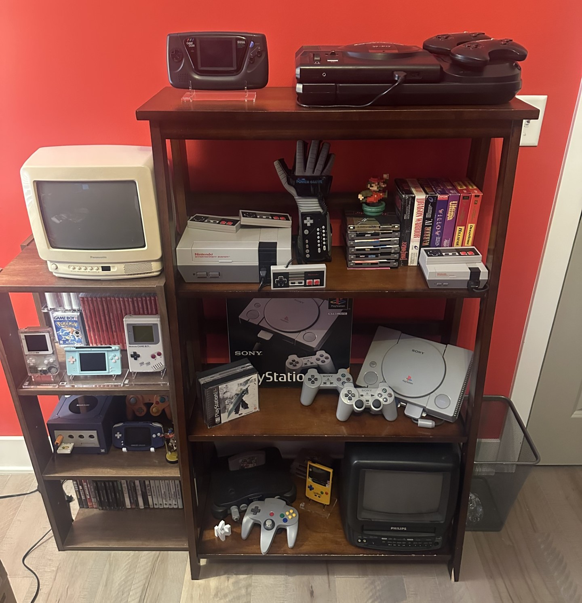

Everyone draws inspiration from something. Whether it’s the people around me, the media I consume, or the stories I hear, I’m constantly finding new ways to stay motivated and grow creatively.
I’ve always looked up to innovators like Steve Jobs and Bill Gates. Their impact on modern technology reminds me why I chose IT: to build, improve, and leave something meaningful behind.
My family has always supported my curiosity and ambitions. Their encouragement has shaped who I am today and continues to motivate me through every challenge. Even if times are tough, we are still there for each other no matter what, through thick and thin!

Video games sparked my interest in how technology works. Playing and analyzing games gave me a deep appreciation for the complexity behind software development and design. Here's a picture of some of my collection!
Last updated: April 2025